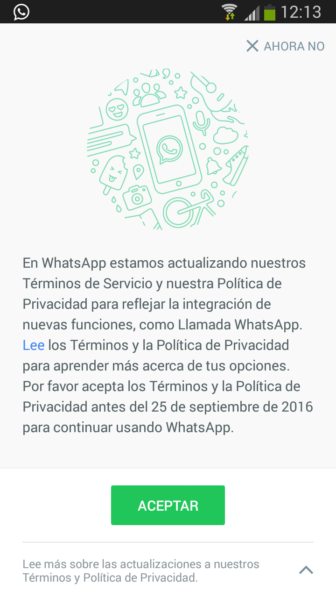

¿Por qué abandonar Whatsapp y pasarse a otro servicio mejor?
21 de septiembre, equinoccio de otoño de 2016
Hace tiempo que ando sopesando la posibilidad de abandonar Whatsapp. De hecho me costó decidirme a instalar la aplicación, pero al final acabé rindiéndome a sus ventajas: puedes comunicarte fácilmente y en cualquier lugar con la gente que tú decides. O no. ¡Ellos también deben tenerla instalada!
Al final Whatsapp no es más que una versión moderna del chat de los 90, solo que básicamente para móviles. Sin embargo hoy en día mucha gente tiene esta app y resulta cómoda. ¿Por qué dejarla, si además hace pocos meses que permite las comunicaciones cifradas?
Pues porque, si ya lo estaba meditando, desde hace casi un mes cuando abro la aplicación veo que debo aceptar sus nuevas condiciones de uso:

De primeras no he aceptado. En su lugar durante estas semanas he escogido una y otra vez "AHORA NO", mientras en paralelo he comenzado a investigar qué es lo que quieren de mí. De todos nosotros. Y, en resumen, esto es lo que he encontrado:
Hace tiempo que Facebook compró Whatsapp, y estaba claro que algún día encontraría la forma de sacarle provecho. Ahora para empezar lo que nos promete es que, si aceptamos sus nuevas condiciones, Facebook nos mostrará publicidad de empresas y servicios que hayamos contactado en Whatsapp. Que incluso podrían meter publicidad en Whatsapp en el futuro. Y que además Facebook nos ofrecerá amistad en su plataforma con la gente que esté en nuestra lista de contactos del móvil.
La publicidad se puede ignorar. El uso comercial de nuestros datos se puede rechazar explícitamente (si lo haces antes de la fecha que ellos marcan, el 25 de septiembre, después estás vendido). Pero lo que no puedes hacer es seguir usando Whatsapp y que la matriz Facebook no conozca todos tus datos. Ni siquiera aunque no tengas cuenta abierta en Facebook, como es mi caso.
Entre esos valiosos datos están, específicamente y como he dicho, la relación de emails y números de teléfono de toda la gente que tengo en lista de contactos. Te tienen a ti. Y a través de ti me tienen a mí. Nos convierten a todos en chismosos traidores en una cadena circular de la que nos da la sensación de que no podemos escapar ni aun borrándonos, porque todos tus amigos, los que te tienen en su lista de contactos, se estarán chivando de ti. No uno o varios, sino que todos te señalan con el dedo... ¡y no lo pueden evitar! Ese tipo de relación con una compañía me hace sentir francamente mal.
Pero además, ¿qué hace Facebook con tus datos? Pues se los pasa (ellos también) a la NSA. Y al BND. Y quién sabe a cuántos servicios más de vigilancia y control gubernamental en un sistema que la mayoría tolera a regañadientes pero al que no muchos respaldan de veras. Yo desde luego no.
{kind=link}
El resultado de esta pequeña investigación me ha llevado a tomar una decisión: con una empresa así no quiero tener tratos. "Whatsapp, te di una oportunidad, pero me has decepcionado. Adiós". Voy a cerrar mi cuenta en Whatsapp y a desinstalar la aplicación.
¡Pero no me aislaré del mundo! Existen gran cantidad de alternativas y al menos una de ellas me ha convencido lo suficiente para cambiarme y usarla. Quien quiera comunicarse conmigo puede seguir utilizando el viejo pero persistente email o el SMS, o continuar leyendo para saber qué opción he elegido y por qué.